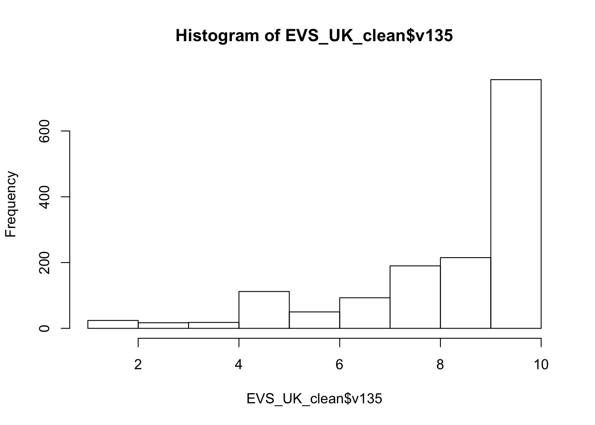
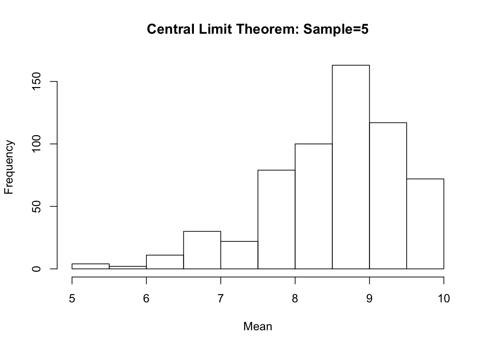
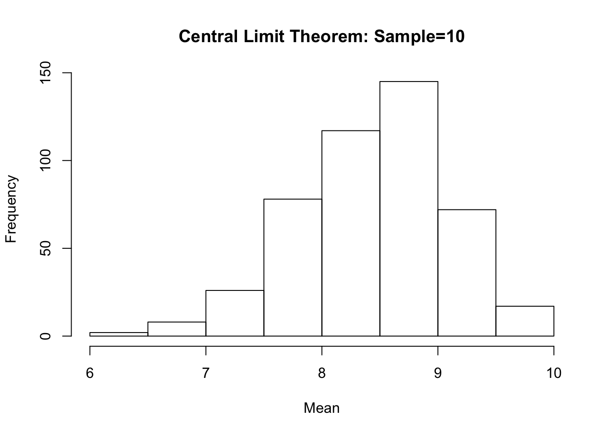
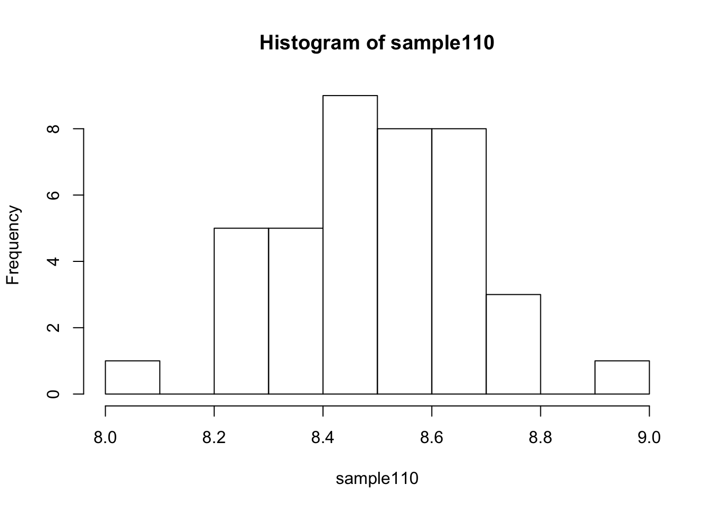

You now know what the Central Limit Theorem is and why it is so important. You ’ve been recently introduced to RStudio and you are very good at it!
Let’s examine the Central Limit Theorem using a real world example from the European Value Survey, more specifically a variable describing attitudes towards democracy. In this case, responders were asked whether they believe that “in democracy people choose their leaders in free elections” (v135).
If we use the table () and the hist() functions we will see that the variable is not normally distributed- the vast majority of the population believes that democracy translates to free elections.
The histogram below shows the distribution of v135, after excluding all missing cases from our EVS_UK dataset. To do so, I used the na.omit() function and using the assignment operator I named our new dataset EVS_UK_clean
load("EVS_UK.RData")
EVS_UK_clean<- na.omit(EVS_UK)
View(EVS_UK_clean)table(EVS_UK_clean$v135)##
## 1 2 3 4 5 6 7 8 9 10
## 19 5 17 18 112 50 93 190 215 756hist(EVS_UK_clean$v135)
According to the Central Limit Theorem if we take repetitive samples from this distribution means then, the sample means will be normally distributed. Remember, the size of our sample is important!
If the size of our sample is small then the means sample will mirror the distribution of our sample, i.e. the distribution of our sample and the distribution of the means of our sample will be identical. Let’s see that with a simple example.
We will start by asking RStudio to take a random sample of 5 observations.
Hint: Remember that the range of our variable is \(0\) to \(10\).
Our next step is to draw repetitive samples. We will do that by using the replicate() function, the number of repetitions is set to 600, as in the previous example, our sample size is equal to 5 from the v135 variable.
samples.600<- replicate(600, sample(EVS_UK_clean$v135,size=5))Remember that the Central Limit Theorem is about the mean of our samples- our next step is to calculate the mean for each one of our 600 samples. To speed up the process we will use the apply() function.
The apply() function is very useful as it help us to make quick operations. The function is easy to use and it has a very simple and clear structure apply(variable, margin, function) where variable is the name of the variable you would like to use; margin: a vector giving the subscripts which the function will be applied over; function: the function you would like to apply, in our example the function we want to apply is the mean.
sample.means<- apply(samples.600, 2, mean)Our final step is to plot the means of our samples
means.hist<- hist(sample.means, main="Central Limit Theorem: Sample=5", xlab="Mean")
What do you think? Is it similar to our original distribution? It is important to remember that the size of our random sample is essential, we need a sufficiently large sample size.
Let’s repeat our analysis, but this time we will ask RStudio to take a sample size twice as big as the previous one i.e. 10.
samples.10<- replicate(600, sample(EVS_UK$v135,size=10))
sample10.means<- apply(samples.10, 2, mean)
means10.hist<- hist(sample10.means,main="Central Limit Theorem: Sample=10", xlab="Mean")
What do you think?
Let’s replicate our analysis but this time we will increase the size our sample.
set.seed(1234)
samples.110<- replicate(600, sample(EVS_UK$v135,size=110))
sample110<- apply(samples.110, 2, mean)
hist(sample110)